Soru 1Cevap: D
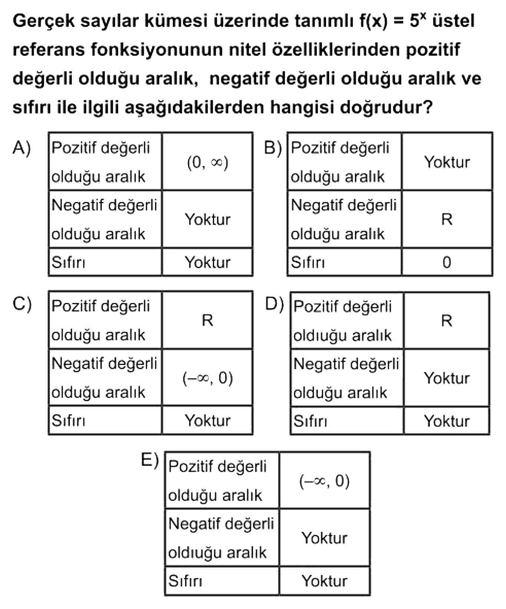
Çözüm
- $5^x\gt0$ her $x$ için: pozitif olduğu aralık $\mathbb R$.
- Negatif değer almaz.
- Sıfırı yok (D).
Cevap: D
Soru 2Cevap: B
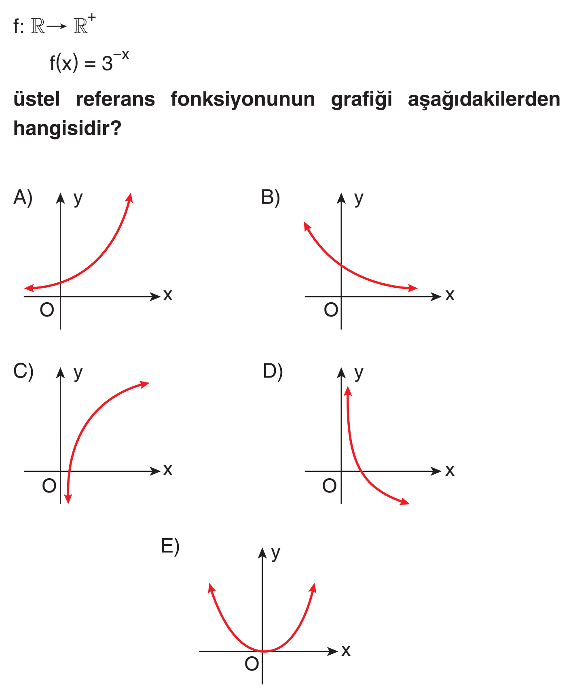
Çözüm
- $3^{-x}=\left(\tfrac13\right)^x$: azalan.
- $(0,1)$'den geçer, pozitif değerler alır.
- Grafik B.
Cevap: B
Soru 3Cevap: D
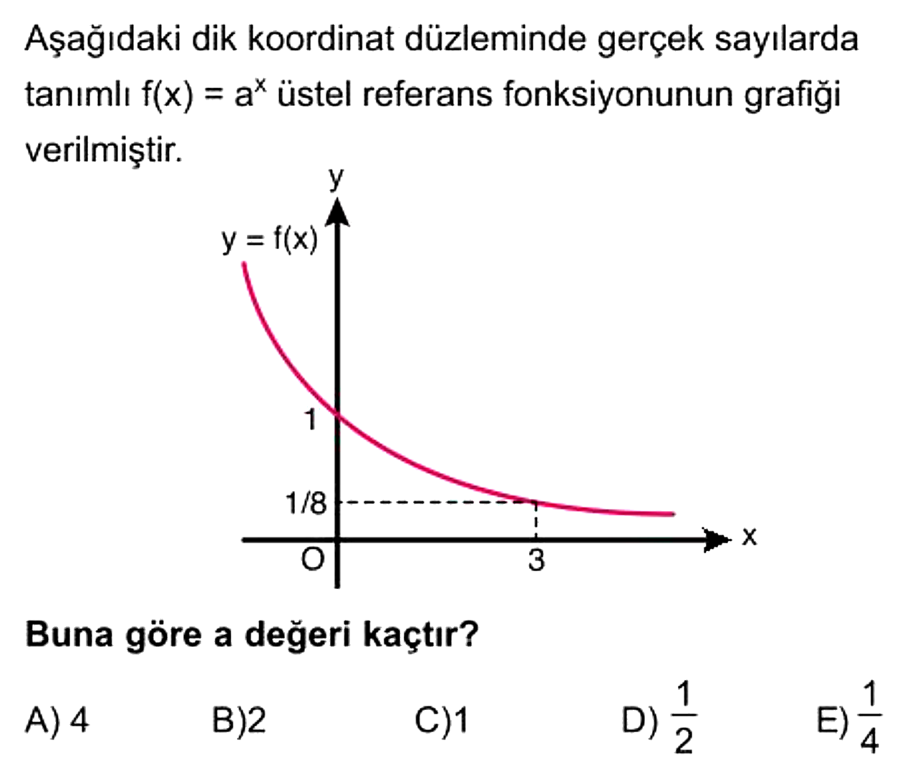
Çözüm
- Grafik $\left(3,\tfrac18\right)$'den geçer: $a^3=\tfrac18$.
- $a^3=\left(\tfrac12\right)^3$.
- $a=\tfrac12$ (D).
Cevap: D
Soru 4Cevap: C
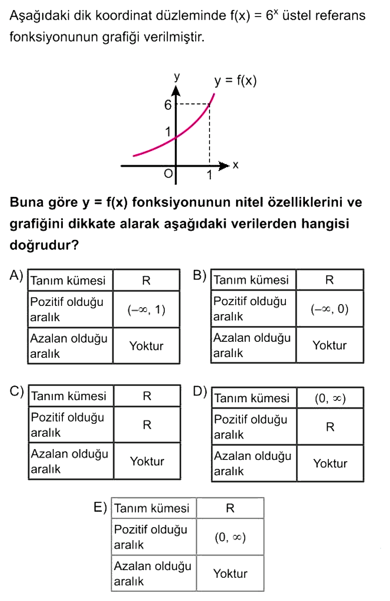
Çözüm
- $6^x$'in tanım kümesi $\mathbb R$.
- Değerler daima pozitif: pozitif olduğu aralık $\mathbb R$.
- Artan; azalan olduğu aralık yok (C).
Cevap: C
Soru 5Cevap: C
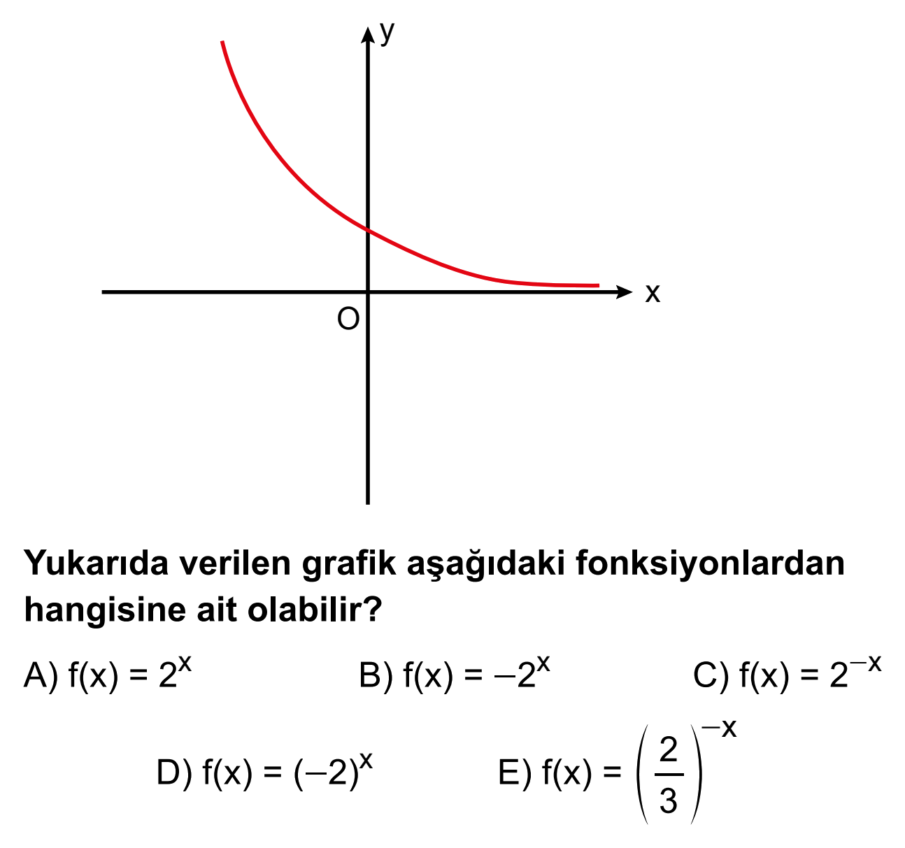
Çözüm
- Grafik azalan, pozitif ve $x$ eksenine yaklaşıyor: taban $1$'den küçük üstel.
- $2^{-x}=\left(\tfrac12\right)^x$ azalandır; $\left(\tfrac23\right)^{-x}=\left(\tfrac32\right)^x$ artandır.
- Cevap C.
Cevap: C
Soru 6Cevap: E
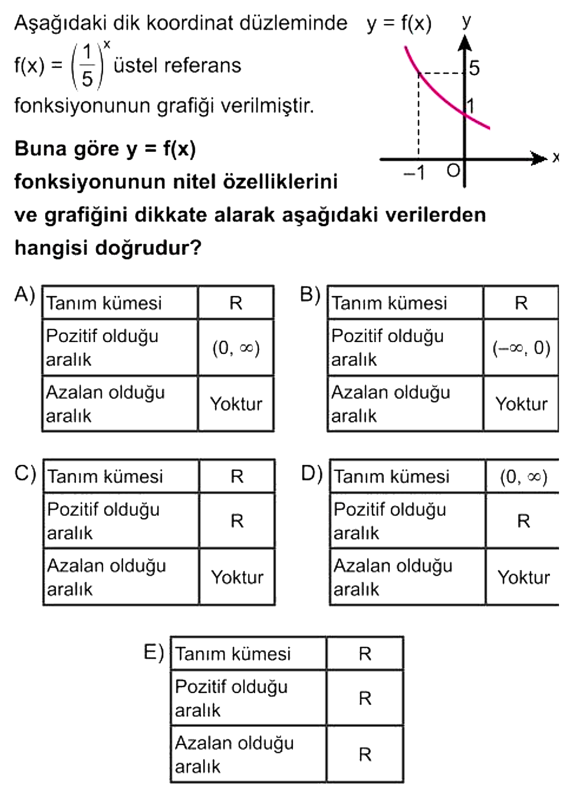
Çözüm
- $\left(\tfrac15\right)^x$: tanım kümesi $\mathbb R$.
- Değerler daima pozitif: pozitif olduğu aralık $\mathbb R$.
- Taban $\tfrac15\lt1$: her yerde azalan, azalan olduğu aralık $\mathbb R$ (E).
Cevap: E
Soru 7Cevap: D
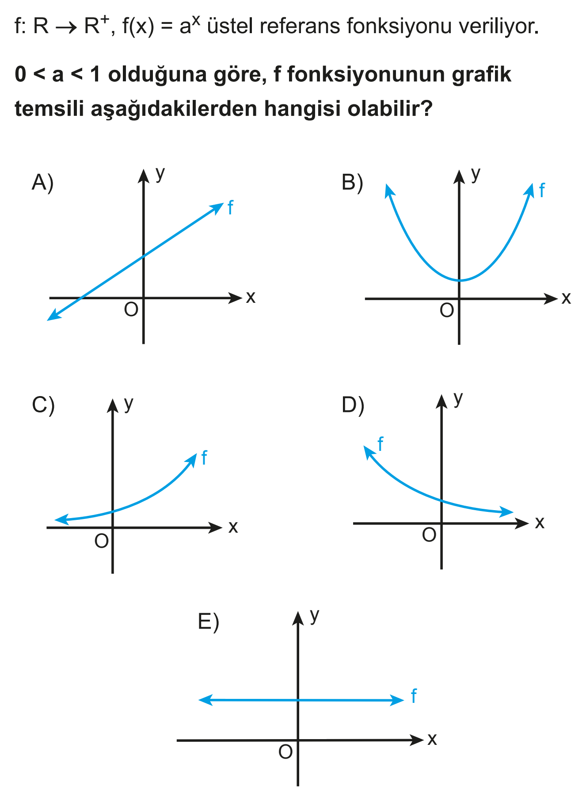
Çözüm
- $0\lt a\lt1$ ise $a^x$ azalandır.
- $a^0=1$: grafik $(0,1)$'den geçer; değerler hep pozitif.
- Azalan ve $x$ ekseninin üstünde kalan grafik D.
Cevap: D
Soru 8Cevap: B
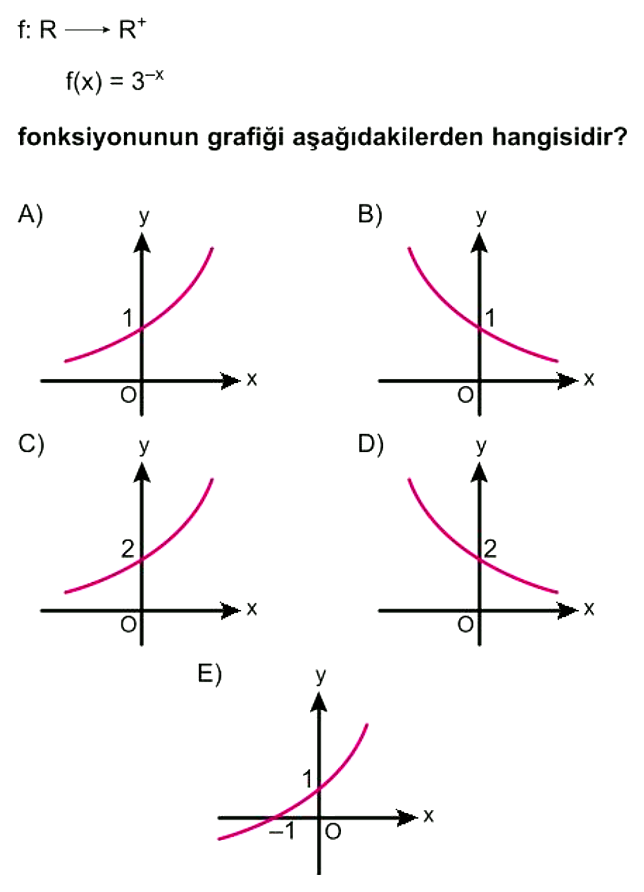
Çözüm
- $3^{-x}=\left(\tfrac13\right)^x$: azalan.
- $f(0)=1$.
- Grafik B.
Cevap: B
Soru 9Cevap: C
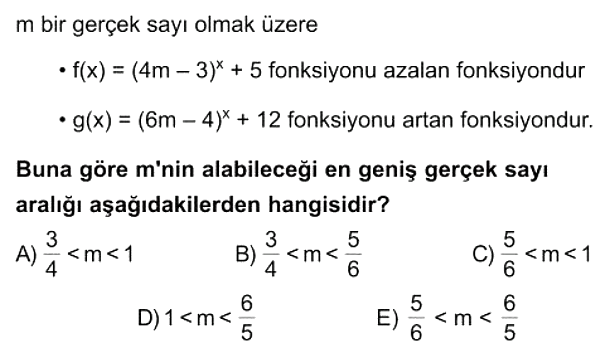
Çözüm
- $f$ azalan: $0\lt4m-3\lt1\Rightarrow\tfrac34\lt m\lt1$.
- $g$ artan: $6m-4\gt1\Rightarrow m\gt\tfrac56$.
- Ortak: $\tfrac56\lt m\lt1$ (C).
Cevap: C
Soru 10Cevap: A
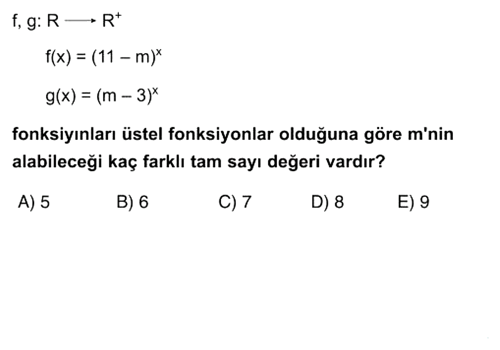
Çözüm
- $11-m\gt0$, $11-m\ne1$: $m\lt11$, $m\ne10$.
- $m-3\gt0$, $m-3\ne1$: $m\gt3$, $m\ne4$.
- $m\in\{5,6,7,8,9\}$: $5$ değer (A).
Cevap: A
Soru 11Cevap: D
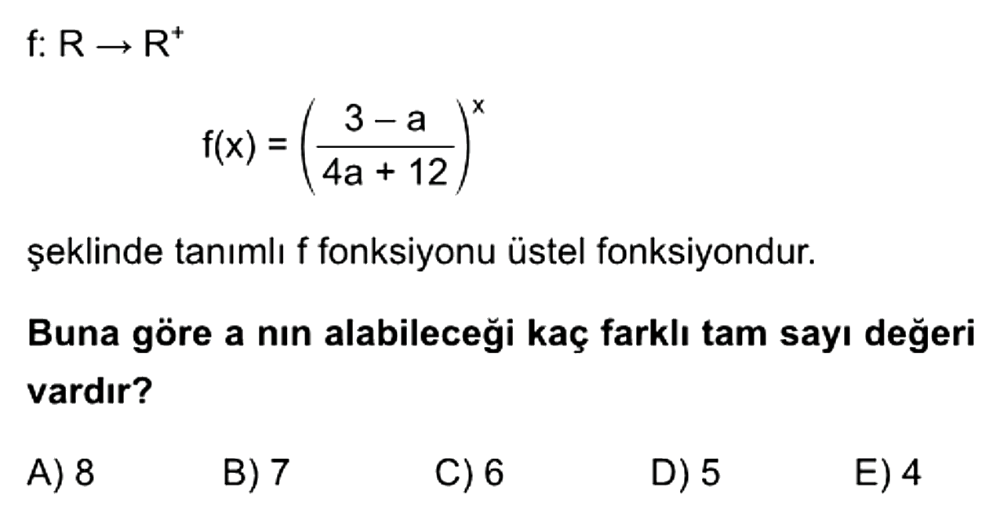
Çözüm
- $\dfrac{3-a}{4a+12}\gt0\Rightarrow-3\lt a\lt3$.
- $\dfrac{3-a}{4a+12}=1\Rightarrow a=-\tfrac95$ (tam sayı değil).
- $a\in\{-2,-1,0,1,2\}$: $5$ (D).
Cevap: D
Soru 12Cevap: E
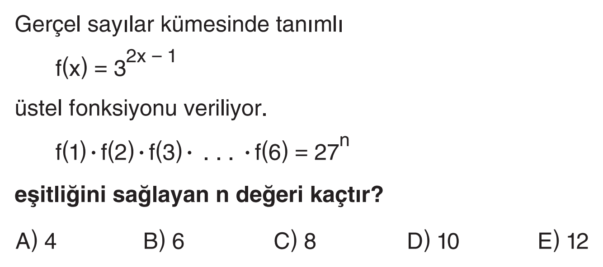
Çözüm
- Çarpım $=3^{1+3+5+7+9+11}=3^{36}$.
- $27^n=3^{3n}$.
- $3n=36\Rightarrow n=12$ (E).
Cevap: E
Soru 13Cevap: E
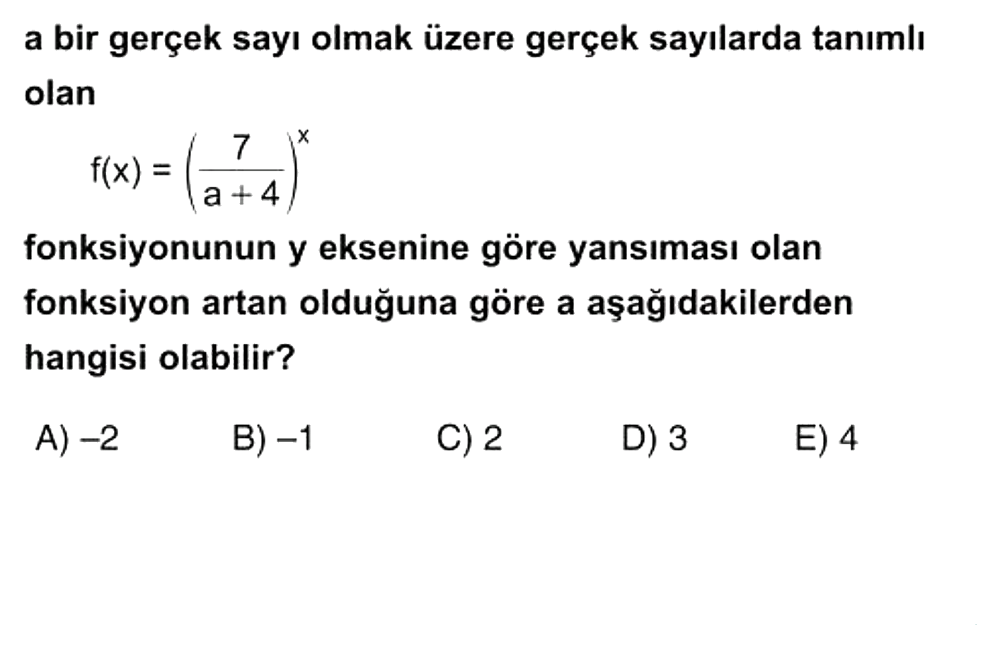
Çözüm
- $y$ eksenine göre yansıma: $\left(\dfrac{a+4}7\right)^x$.
- Artan: $\dfrac{a+4}7\gt1\Rightarrow a\gt3$.
- Seçeneklerden $4$ (E).
Cevap: E
Soru 14Cevap: B
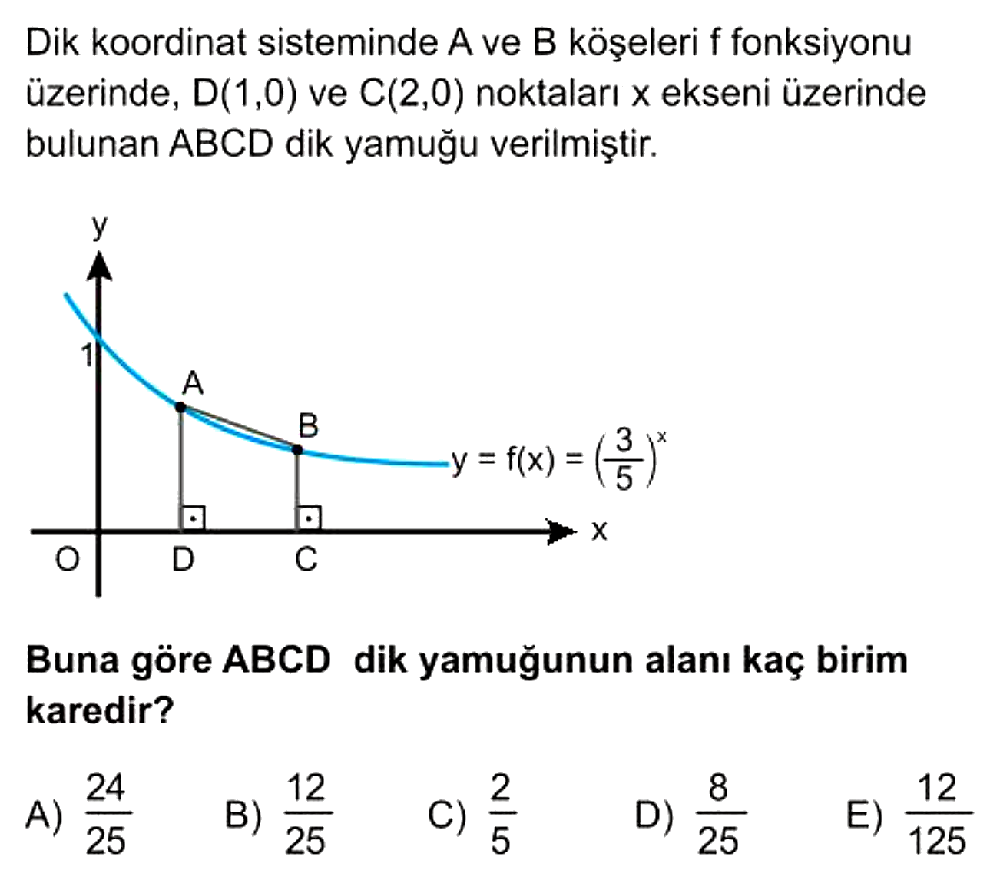
Çözüm
- $|AD|=f(1)=\tfrac35$, $|BC|=f(2)=\tfrac9{25}$, $|DC|=1$.
- Alan $=\dfrac{\frac35+\frac9{25}}2\cdot1=\dfrac{24/25}2$.
- $=\tfrac{12}{25}$ (B).
Cevap: B
Soru 15Cevap: E
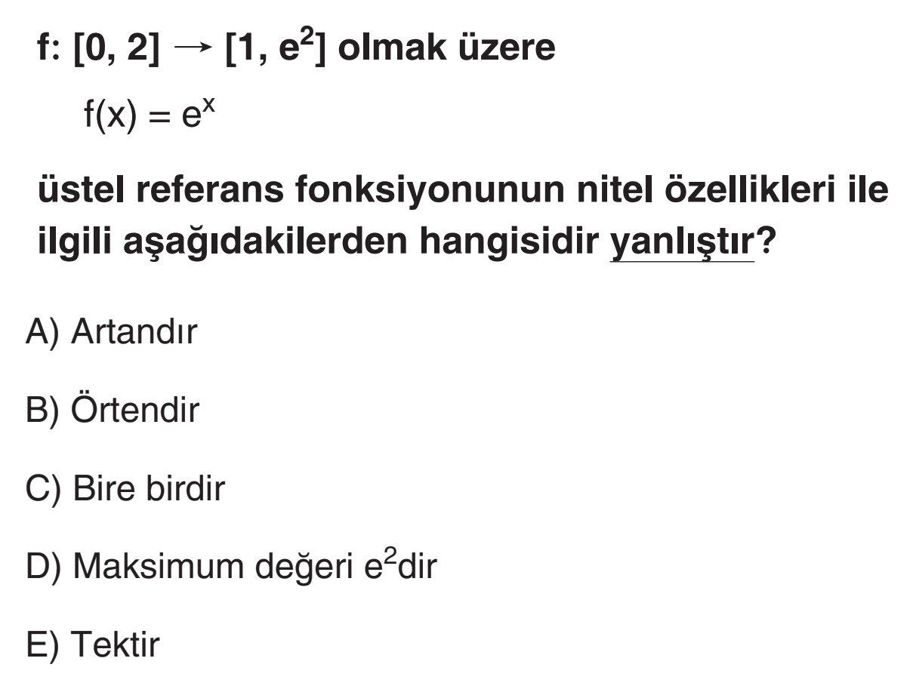
Çözüm
- $e\gt1$: $f$ artandır, dolayısıyla bire birdir.
- $f(0)=1$, $f(2)=e^2$: görüntü kümesi $[1,e^2]$ değer kümesine eşit, örtendir; maksimum $e^2$.
- Tanım aralığı $[0,2]$ orijine göre simetrik değil; tek fonksiyon olamaz. Yanlış olan E.
Cevap: E
Soru 16Cevap: A
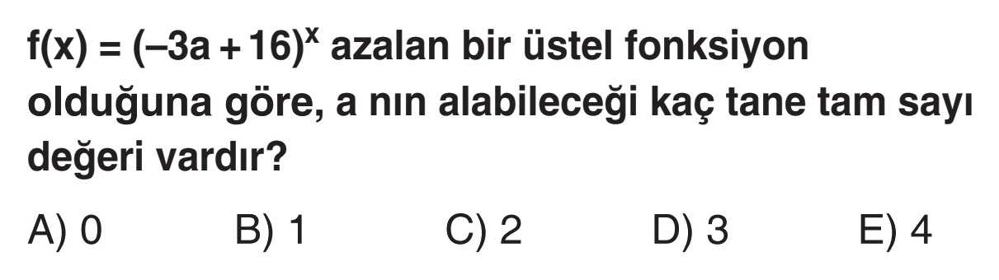
Çözüm
- Üstel fonksiyon azalan ise $0\lt-3a+16\lt1$ olmalı.
- $-16\lt-3a\lt-15\Rightarrow5\lt a\lt\tfrac{16}{3}\approx5{,}33$.
- Bu aralıkta tam sayı yoktur: $0$ (A).
Cevap: A
Soru 17Cevap: E
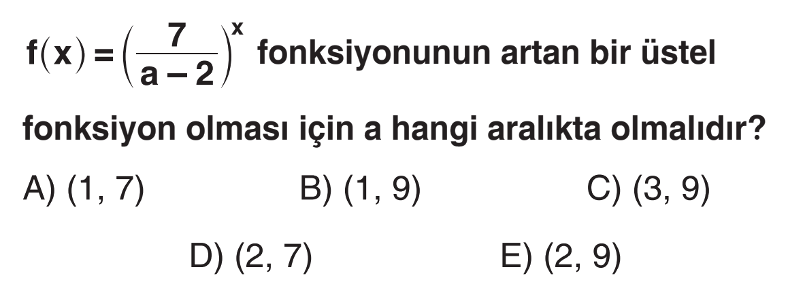
Çözüm
- Artan üstel fonksiyon için taban $1$'den büyük olmalı: $\dfrac7{a-2}\gt1$.
- Payda pozitif olmalı: $a-2\gt0$; o hâlde $7\gt a-2$.
- $2\lt a\lt9$ (E).
Cevap: E
Soru 18Cevap: D
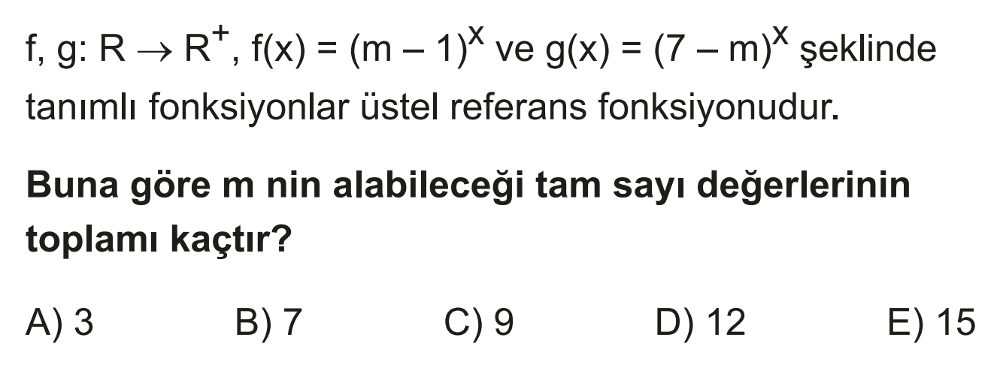
Çözüm
- $m-1\gt0$, $m-1\ne1$: $m\gt1$, $m\ne2$.
- $7-m\gt0$, $7-m\ne1$: $m\lt7$, $m\ne6$.
- $m=3,4,5$; toplam $12$ (D).
Cevap: D
Soru 19Cevap: E
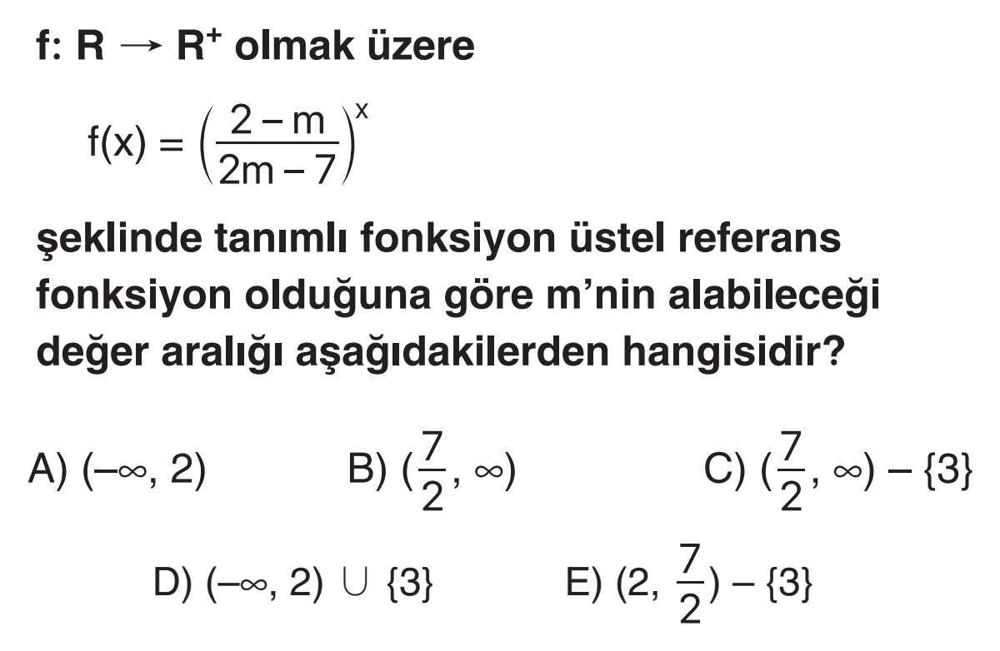
Çözüm
- $\dfrac{2-m}{2m-7}\gt0$: pay ve payda aynı işaretli $\Rightarrow2\lt m\lt\tfrac72$.
- $\dfrac{2-m}{2m-7}=1\Rightarrow2-m=2m-7\Rightarrow m=3$ dışlanır.
- $m\in\left(2,\tfrac72\right)-\{3\}$ (E).
Cevap: E
Soru 20Cevap: E
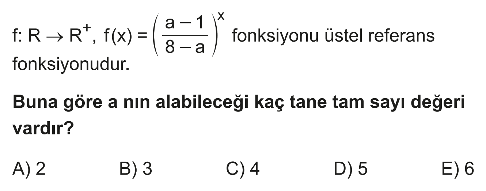
Çözüm
- $\dfrac{a-1}{8-a}\gt0\Rightarrow1\lt a\lt8$.
- $\dfrac{a-1}{8-a}=1\Rightarrow a=\tfrac92$ (tam değil).
- $a=2,\dots,7$: $6$ tam sayı (E).
Cevap: E
Soru 21Cevap: C
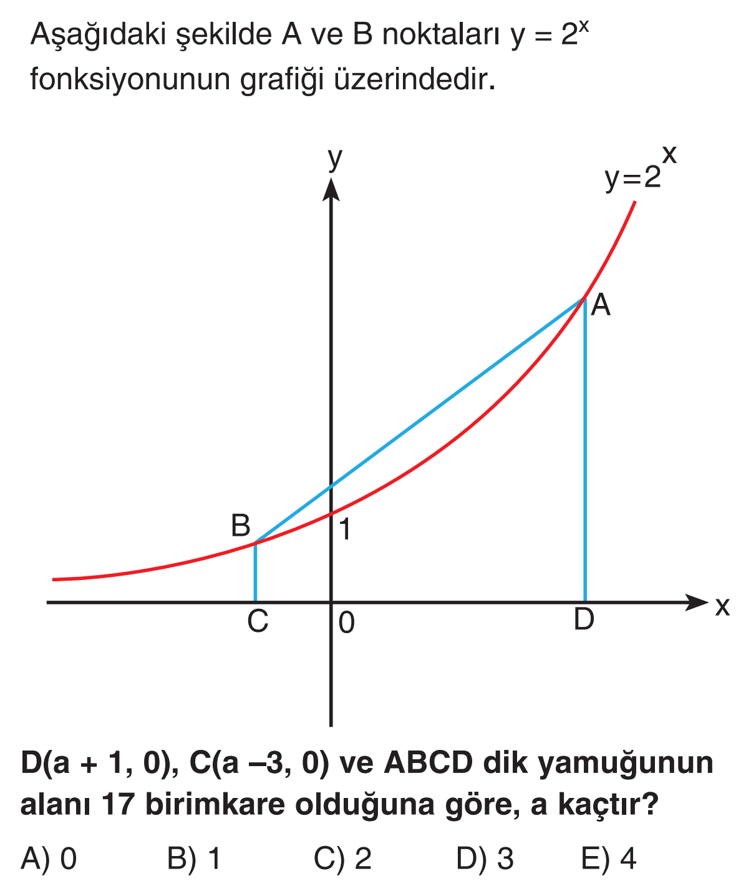
Çözüm
- $A(a+1,2^{a+1})$, $B(a-3,2^{a-3})$; yamuğun yüksekliği $|CD|=4$.
- Alan $=\dfrac{2^{a+1}+2^{a-3}}{2}\cdot4=2\cdot2^{a-3}(16+1)=34\cdot2^{a-3}=17$.
- $2^{a-3}=\tfrac12\Rightarrow a-3=-1\Rightarrow a=2$ (C).
Cevap: C
Soru 22Cevap: C
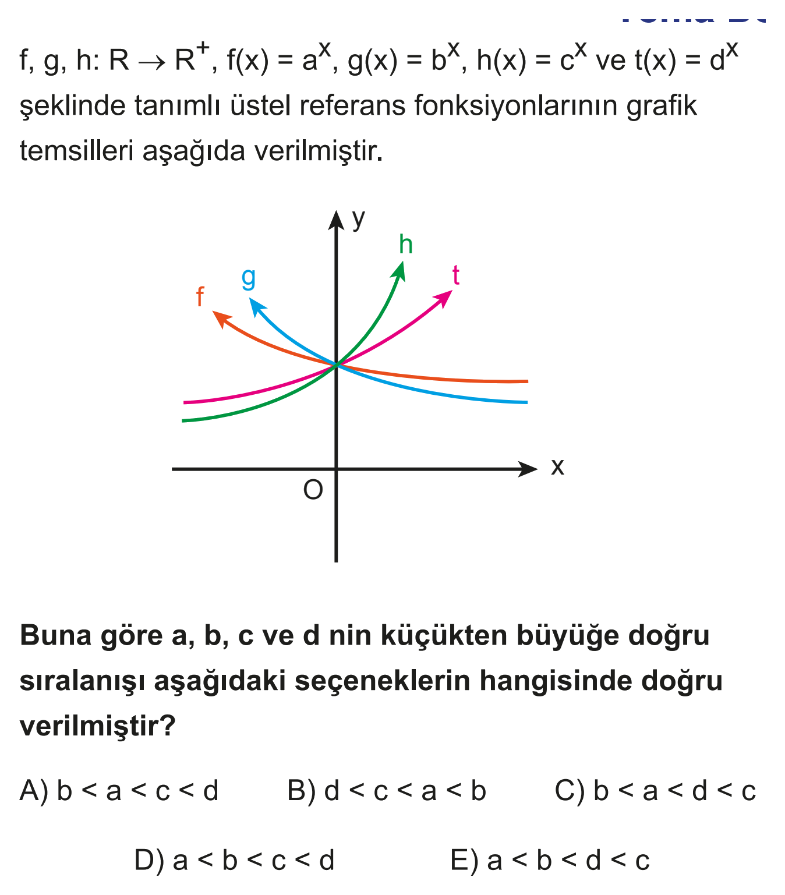
Çözüm
- $h$ ve $t$ artan: $c,d\gt1$; $x\gt0$'da $h$ daha dik: $c\gt d$.
- $f$ ve $g$ azalan: $a,b\lt1$; $x\lt0$'da daha dik olan daha küçük tabanlıdır: $g$ daha dik, $b\lt a$.
- $b\lt a\lt d\lt c$ (C).
Cevap: C
Soru 23Cevap: C
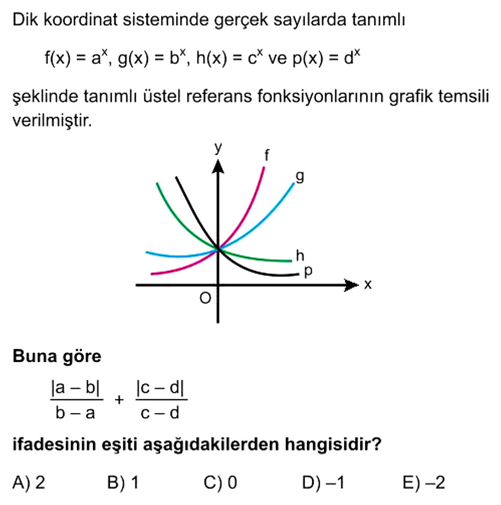
Çözüm
- $f,g$ artan ve $x\gt0$'da $f$ daha dik: $a\gt b\gt1\Rightarrow\dfrac{|a-b|}{b-a}=-1$.
- $h,p$ azalan ve $x\gt0$'da $h$ üstte: $1\gt c\gt d\Rightarrow\dfrac{|c-d|}{c-d}=1$.
- Toplam $0$ (C).
Cevap: C
Soru 24Cevap: C
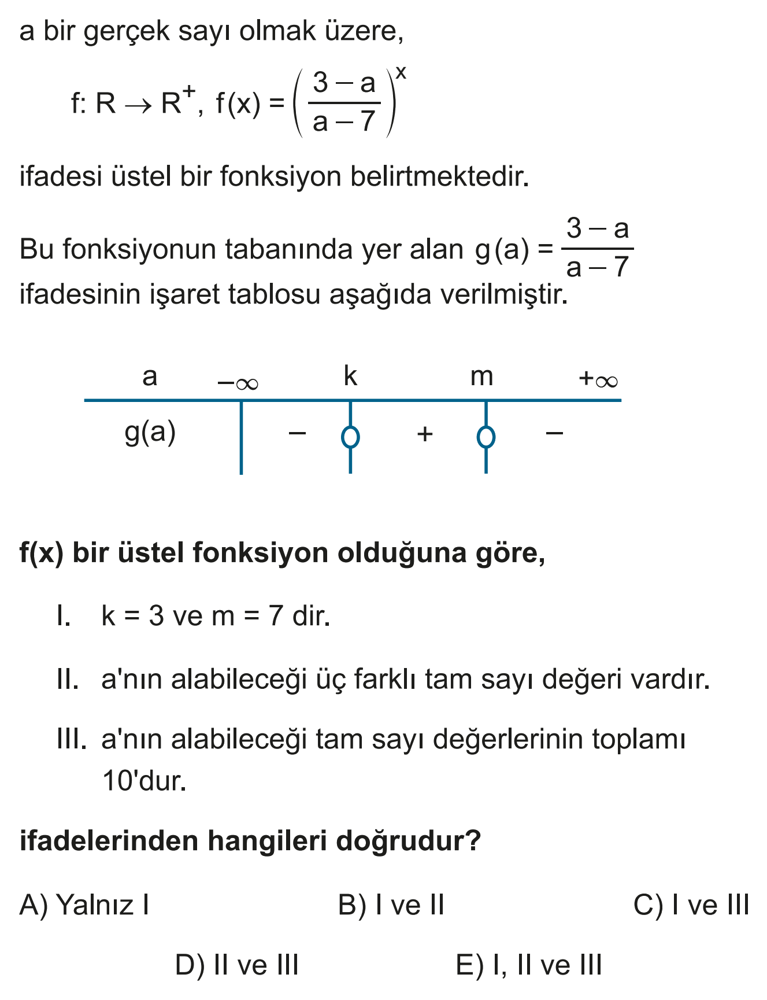
Çözüm
- $g(a)=\dfrac{3-a}{a-7}$: kökler $k=3$ (pay) ve $m=7$ (payda) (I doğru).
- Taban pozitif: $3\lt a\lt7$; taban $1$ olamaz: $3-a=a-7\Rightarrow a=5$.
- $a=4$ veya $6$: iki değer (II yanlış), toplam $10$ (III doğru). I ve III (C).
Cevap: C